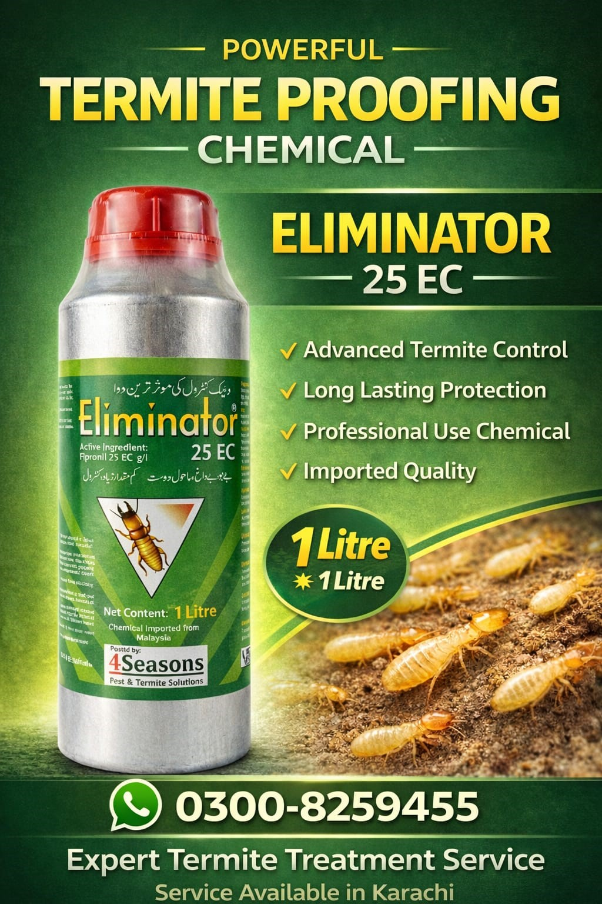

Professional Termite Control • Long-Term Protection • Colony Elimination
Imported from Malaysia | Packed & Marketed by: 4 Seasons Pest & Termite Solutions
ELIMINATOR® 25EC Fipronil is a professional-grade termiticide formulated with Fipronil 25 EC, a non-repellent active ingredient that provides effective and long-lasting protection against subterranean termites. Termites cannot detect the treated area and continue moving through it, allowing the active ingredient to spread throughout the colony and achieve colony-level control.
Fipronil acts on the insect nervous system by disrupting nerve signal transmission. Because it is slow-acting and non-repellent, exposed termites carry the active ingredient back to the colony and transfer it to other termites through contact and grooming activities, resulting in effective colony control.
Ants, Cockroaches, and Wood borers (where label permits).
| Application Type | Mixing Ratio (Chemical + Water) |
|---|---|
| Soil / Barrier Treatment | 1 Litre Eliminator + 100 Litres Water |
| Drilling / Injection | 10 ml Eliminator + 1 Litre Water |
| Wood / Furniture Protection | 15 ml Eliminator + 1 Litre Water or Kerosene Oil |
Storage: Store in the original container with the lid tightly closed in a cool, dry, and well-ventilated place away from direct sunlight.
Warranty Statement: When applied by trained professionals according to recommended procedures, ELIMINATOR® 25EC FIPRONIL provides reliable and long-lasting termite protection.